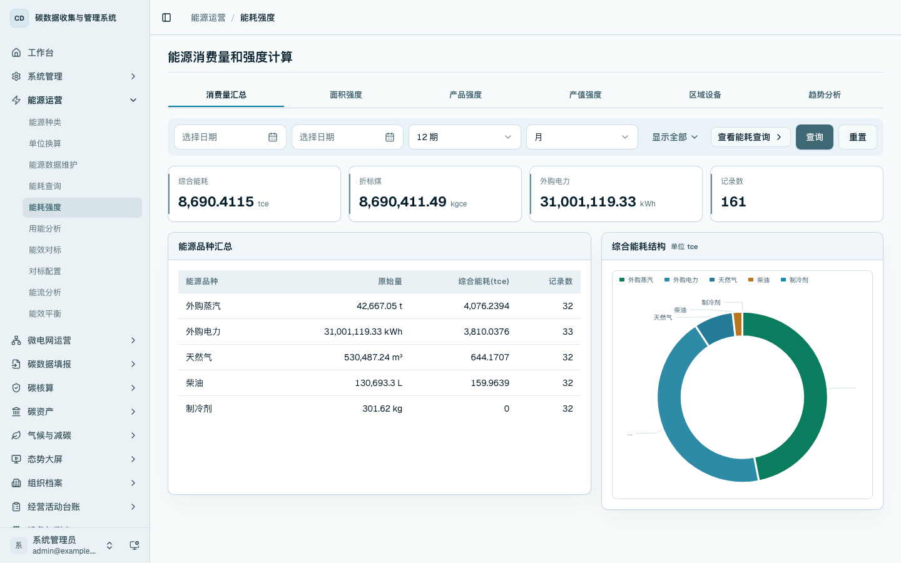
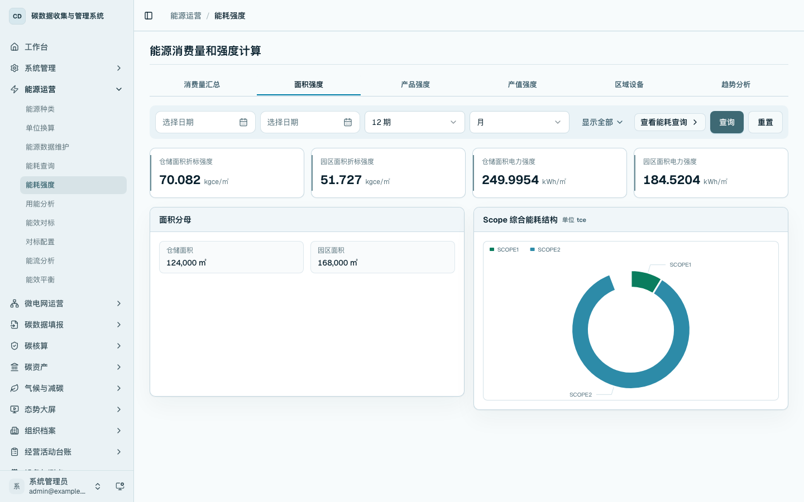
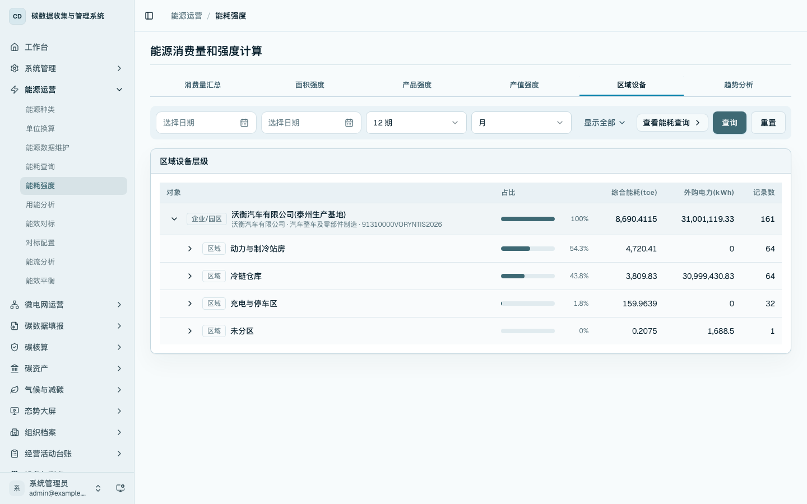
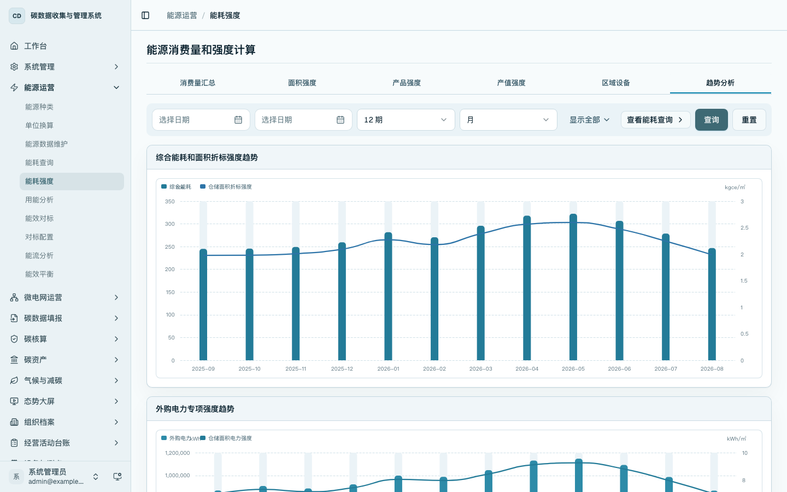

能耗强度
本章说明如何查看综合能耗、折标煤、外购电力、面积强度、区域设备层级和趋势。能耗强度用于回答“单位面积、区域或设备层级的用能水平如何”。
菜单位置
- 首页工作台：在
/home的「能源运营」区域点击「能耗强度」进入。 - 侧边栏：进入「能源运营 / 能耗强度」，打开
/energy/intensity。
消费量汇总
进入 /energy/intensity，查看能源消费量和强度指标。页面提供开始日期、结束日期、统计周期数、统计粒度、状态、Scope、能源品种、产品、业务类型、产线编码、区域 ID、设备编码和价格口径等条件。
「消费量汇总」用于查看综合能耗、折标煤、外购电力和记录数，并按能源品种展示原始量、综合能耗和记录数。该页用于确认纳入强度计算的能源事实数据范围。

面积强度
切换到「面积强度」页签，查看仓储面积折标强度、园区面积折标强度、仓储面积电力强度和园区面积电力强度。页面同时展示仓储面积、园区面积等分母数据，便于说明强度指标对应的面积口径。

区域设备
切换到「区域设备」页签，按企业、区域、设备/设施层级查看综合能耗、外购电力和记录数。该页适合查看仓储区域和关键设备对用能强度的影响。

趋势分析
切换到「趋势分析」页签，查看综合能耗、面积折标强度、外购电力和仓储面积电力强度趋势。用户可通过统计粒度和周期数控制趋势展示范围。

操作要点
- 强度指标依赖能源事实数据和分母数据。
- 仓储运营展示优先使用面积强度、区域设备和趋势分析。
- 产品强度、产值强度用于生产制造场景，可在具备对应业务数据后使用。